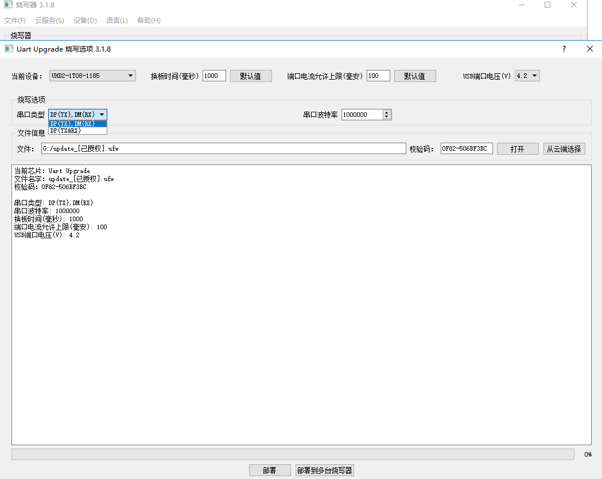
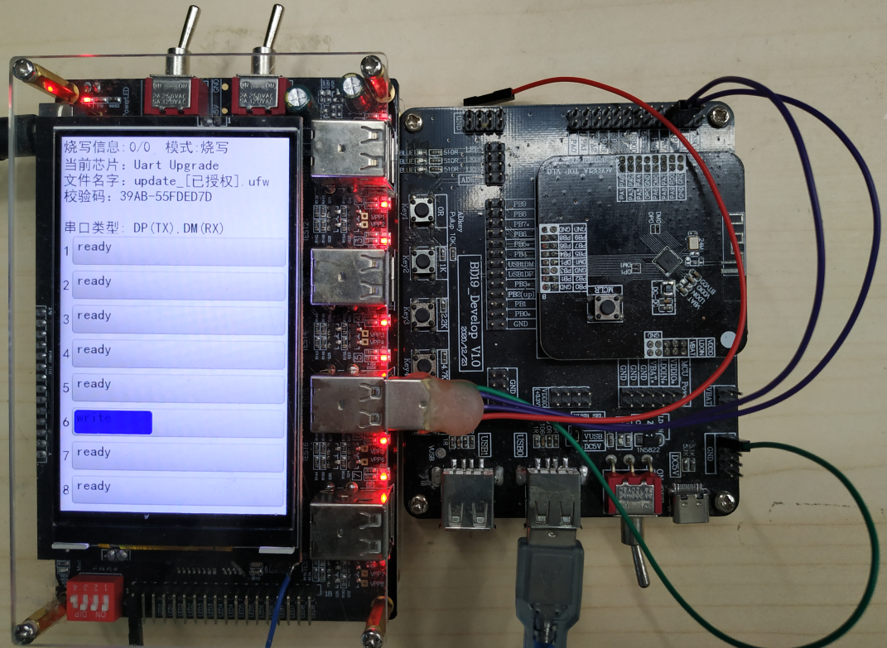

2.17. Upgrading Battery-Powered Devices over a Custom-IO Single/Two-Wire UART
Support for custom UART upgrade was added in programmer version V3.1.8.
[1] Open the
burner.exesoftware and, in the main window of the programmer tool, click [File] (文件) -> [Deploy] (部署) -> [UART Upgrade] (串口升级) to open the main window of the UART upgrade deployment program, as shown in UART upgrade main window;[2] Define the corresponding IOs and the single-wire/two-wire mode in the application;
[3] Set [UART type] (串口类型) to match the application's configuration: select two-wire [DP(TX),DM(RX)] or single-wire [DP[TX&RX]]. [DP(TX),DM(RX)] means that the DP pin of the programmer's USB programming port acts as UART TX to send data and DM acts as UART RX to receive data; [DP[TX&RX]] means that the DP pin of the programmer's USB programming port both sends and receives;
[4] The configuration item [UART baud rate] (串口波特率) has a default value of 1000000bit/s. It can be changed to control the upgrade speed; the default value is usually fine;
In the PC interface of the 1-to-8 programmer, this upgrade does not distinguish between chip models (any model can be upgraded with this function, as long as the firmware in the device chip and the upgrade ufw support it); simply upgrade with the authorized upgrade ufw that corresponds to the device model. Use version V2.1.1 or later of the programming file authorization tool.

UART upgrade main window
The following example demonstrates a two-wire UART upgrade of a device that is powered (or battery-powered) and running.
Figure Two-wire UART upgrade demo with the device powered and running shows an AC632N development board. The board is powered through a USB port other than the programmer's programming port, to simulate the battery power of the device in a real upgrade. Because this is a UART upgrade performed while the firmware is running, the device is powered and running.
In this demonstration, the firmware deployed to the programmer is an authorized AC632N ufw file.
[1] Open the
burner.exesoftware and go to the main window for UART upgrade deployment;[2] Upgrade port PA8 is configured as UART RX and PA7 as UART TX. Connect pin PA8 on the AC632N development board to the DP(TX) pin of the programmer's USB port, and pin PA7 to the DM (RX) pin of the programmer's USB port. In addition, connect the GND of the USB cable to the GND of the development board;
[3] Set [UART type] (串口类型) to two-wire [DP(TX),DM(RX)];
[4] For the configuration item [UART baud rate] (串口波特率), use the default value of 1000000bit/s;
Power is not supplied through the programmer's USB programming port. In real production, the device is usually powered by its own battery; in this demonstration, an external USB supply replaces the battery to power the development board.
Once the development board is powered, the chip runs its own firmware. Then plug the USB cable carrying the two UART upgrade wires and GND into the programmer's programming port; the upgrade progress is shown as in the progress bar in the figure.
For a single-wire upgrade of a device with a battery (or powered), connect only one UART wire and one GND wire to the device, set [UART type] (串口类型) to [DP[TX&RX]] in the PC tool, and then plug the cable into the programmer port to perform the single-wire UART upgrade.

Two-wire UART upgrade demo with the device powered and running